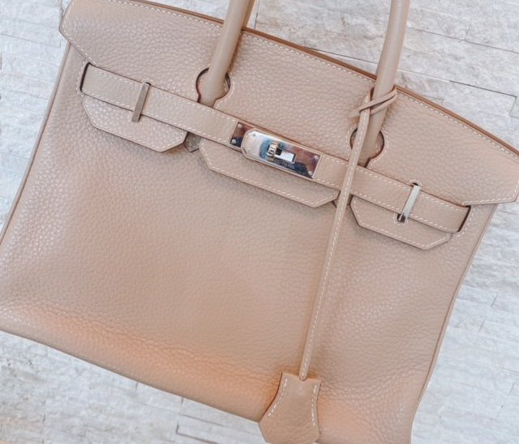
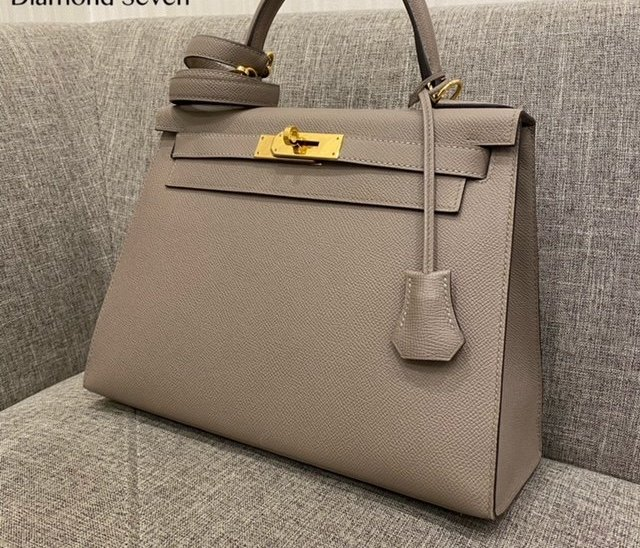
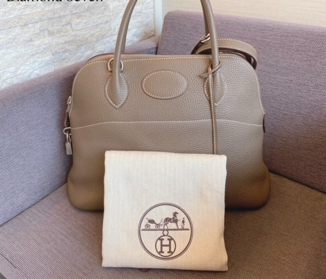

エルメスのバーキン(Birkin)を徹底解説！ケリーとの違いは？3つの入手方法も確認
PRこの記事には広告（楽天市場のアフィリエイトリンク）が含まれます。
この記事は2020年に公開した内容をもとにしています。紹介している商品は現在販売されていない場合があり、価格も変動しています。

この記事でわかること
- エルメス(Hermès)のバーキン(Birkin)とは
- バーキンのサイズをチェック
- バーキンは素材ごとに価格が違う
- 一見さんは購入できない！？ バーキンを手にするための3つのルート
- エルメスのバーキン人気アイテム5選
この記事で紹介しているアイテム（5点）
一流ブランドバッグの代名詞「エルメスのバーキン」。
海外セレブや著名人に愛用者が多く、自分には無縁のもの…と思っていませんか？
かたや、「○歳の誕生日に買うことを目標に、お仕事がんばってます！」など、人生の節目や自分自身への記念に、いつか手にしたいと憧れている方もいますよね。
そこで今回は「いつかは手にしたい」と憧れている方に向けて、サイズのラインナップや素材の種類、気になる販売価格まで…エルメスのバーキンのすべてを紹介します！
また、実はエルメス直営店で買うことができない！？バーキンの入手方法も調べましたので、ぜひ参考にしてみてください。
1.エルメス(Hermès)のバーキン(Birkin)とは
出典元：ウィキメディアコモンズ、無料のメディアリポジトリから
それではまず、「バーキン」について簡単におさらいをしましょう。
1-1.女優「ジェーン・バーキン」との出会いで生まれたバッグ
バーキンが生まれたきっかけはまさに偶然から。
エルメスの5代目社長がイギリスの女優、ジェーン・バーキンと航空機の機内で隣り合わせたことから始まります。
そのとき、社長はジェーンのボロボロのバッグにたくさんの荷物が無造作に詰め込まれているのを見て、「どんなものでも収納できる、あなたの理想のバッグを作りたい」とジェーンに申し出たのです。
このとき、ジェーン・バーキンのために作られたバッグがバーキンの原型です。
そのバッグが後に「バーキン」の名で市場に出回ることになりました。
バッグ《バーキン》の公式サイトでもより詳細な説明がありますので、チェックしてみてください。
1-2.似ているけど違う！ケリー(Kelly)との違いは？
エルメスを象徴する2大バッグである「ケリー」と「バーキン」。
一見するとよく似ていますが、コンセプトが全く違うバッグのため、はっきりとした違いがあります。
直線的なフォルムと台形型が特徴のケリー。
中にどのような荷物を入れても美しいフォルムを保ち、フォーマルシーンで活躍する上品でラグジュアリーなハンドバッグです。
一方バーキンは「どんなものでも収納できる」という実用性を重視したハンドバッグ。ケリーと比較するとフォルムは柔らかめで、カジュアルシーンにもマッチします。
また、バーキンは耐久性を高くするためハンドルが2本構造になっていますが、ケリーは細いハンドルが1本です。
また、バーキンにはフロントと背面それぞれにポケットがありまが、ケリーには外ポケットがありません。
このように、外観にも大きな違いがあります。
2.バーキンのサイズをチェック
では、次に、バーキンを確認しましょう。
バーキンは25・30・35・40・45の5サイズ展開です。特に30サイズに人気が集中しており、需要も流通量も多いです。
【25センチ】 横25cm×縦21cm×マチ(幅)13cm
やや小ぶりのサイズですが長財布や手帳など、外出の際の必需品は収納することができます。
気品を残しながらも、ころんとしたシルエットがかわいらしいサイズ感です。
上品なイメージでバーキンを持ちたいという方におすすめのサイズです。
【30センチ】 横30cm×縦22cm×マチ(幅)16cm
一番人気のあるサイズです。大きすぎず小さすぎず、外観もカジュアルダウンしすぎないバランスのよいサイズです。
そのためどのようなシーンにも活躍してくれることでしょう。
必要な荷物を収納しつつまだ少しゆとりのある、使い勝手のよいサイズ感です。
【35センチ】 横35cm×縦27cm×マチ(幅)18cm
A4サイズの書類や雑誌などもそのまま収納できるやや大きめのサイズです。
反面、ドレスやワンピースなどを着用するパーティシーンでは主張しすぎてしまいます。
ビジネスバッグとして、また普段からカジュアルにバーキンを持ち歩きたいならこのサイズがよいでしょう。
【40センチ】 横40cm×縦29cm×マチ(幅)21cm
女性の普段使いバッグには少し大きめのため、旅行バッグとしてやバーキンを持ちたい男性に選ばれれているサイズです。
パートナーとシェアして使う、というのもよいでしょう。
使用する革の面積が広いためなかなか出回っておらず、流通量は少なめです。
3.バーキンは素材ごとに価格が違う
カジュアルにも上品にも映るバーキンは、シーンを限定しない素材が人気です。
そしてバーキンには定価がありません。
それは素材ごとに価格が違うからです。またその素材の市場価格などで価格が変動するため、その年によっても値段が変わります。
そのため、これからご紹介する価格は参考価格になりますのでご了承ください。
＜トゴ＞
エルメスの定番素材であるトゴとは雄仔牛の革で、なめらかな質感が特徴です。表面には深く細かいシワ模様が型押しされています。
面白いのはこのシワ。トゴは年式によって革の質が変わり、シワの凹凸が大きく変化します。そのため、そのバーキンが作られた年によって表情が変わります。
相場は30サイズで130万円前後です。
＜トリヨンクレマンス＞
雄牛の革を使ったトリヨンクレマンスは、先ほどご紹介したトゴよりもシワ模様の目が大きめです。
そのため、トゴよりもカジュアルで柔らかい印象を与えます。
トリヨンクレマンスは年式によってシワの大きさ細かくなったり大きくなったりと変化します。
相場もトゴと同じく30サイズで130万円前後です。
＜ヴォー・エプソン＞
雄牛の革に細かいシワ模様の加工を施した素材です。
しっかりとした張りがあり、型崩れしにくいのがポイント。かっちりとした印象になるため、ビジネスシーンやフォーマルシーンにぴったりです。
またほどよい光沢があり、発色に優れています。
相場は、こちらも30サイズで130万円前後です。
＜ヴォー・スイフト＞
マットなレザー、ヴォー・スイフト。雄仔牛の革を使用しています。シワ模様の加工は浅く細かいため、スムースな質感と弾力性が魅力です。
同じ牛革でも色の発色は素材によって異なりますが、こちらのヴォー・スイフトは前述のトゴやトリヨンクレマンスと同じカラーであっても鮮やかに発色します。
相場は30サイズで135万円前後です。
4.一見さんは購入できない！？ バーキンを手にするための3つのルート
良質な皮素材を確保しづらくなった現在、エルメスのアイテムはどんどん生産数が少なくなってきています。
そのため需要が高いバーキンは、エルメスの直営店であっても手に入らないことがあるのです。
①エルメスの顧客になる
エルメスの直営店では、基本的にバーキンやケリーなどの人気のバッグは顧客を優先して販売します。
ではエルメスの顧客になるにはどうしたらよいのでしょうか？
顧客にははっきりとした基準はありませんが、エルメスを含むハイブランドでは下記のようなステップで顧客になれると言われています。
・商品を購入する店舗を1つに決め、毎回必ず同じ店舗で購入する
・1人の店員さんを毎回指名し、その人から買い続けることで自分の担当になってもらう
担当の方から声が掛かるようになれば、あなたもエルメスの顧客の一人です。
エルメス専門店をチェックする
エルメスのアイテムを取り扱っているお店はエルメス直営店だけではありません。
エルメス専門店で購入するという方法もあります。エルメス専門店は全国各地に店舗があります。
エルメス専門店とはエルメスが直接運営しているのではなく、ヨーロッパなどの直営店から買い付けた新品・本物を販売しているお店のこと。
エルメス専門店自体はエルメスの直営ではありませんが、取り扱っているものはエルメス直営店から購入した新品が基本のため、直営店に次いで安心と言えるでしょう。
リユース品をチェックする
顧客になるのも大変だし、バーキンを今すぐお得に手に入れたい！という方はECサイトやリユースショップで購入するのも一つの方法でしょう。
リユース品を購入する際に一番不安なのが、偽物ではないかということですね。
コピー品はどんどん精巧になり、鑑定のプロでも見分けられないことがあるほど。できる限り広いネットワークを持ち、信頼できる鑑定士のいるショップを選んで購入すると安心です。
5.エルメスのバーキン人気アイテム5選
最後にエルメスのバーキンの中でも人気のバーキンを消化します！
①エルメス バーキン30 エトゥープ トゴ シルバー金具
エルメスの数多くのカラーラインナップの中でも今、特に人気があるのがこちらの「エトゥープ」。
エトゥープはエルメス独自のカラーで、ゴールドも感じられる絶妙なグレージュです。
気品も感じつつ、デイリーにも取り入れやすく、コーディネートを選ばない優秀なカラー。柔らかい色合いで、女性らしい安心感も醸し出します。
また使われている革素材も定番のトゴ。
サイズも30サイズと大きすぎず小さすぎずなサイズで使い勝手もよく、ファーストバーキンにおすすめの一品です。
②エルメス バーキン 30 ブラック トゴ
エレガンスなブラックのバーキン。こちらもエトゥープと並んで人気のカラーです。
使いやすいベーシックなカラーなので、ブラックバーキンは入手困難という話も。
ブラックのトゴに組み合わされているのはピンクゴールドの金具。イエローゴールドよりも控えめなゴールドで、ほんのりピンクの色味は日本人の肌の色に合わせやすいと言われています。
今はエルメスだけでなく、様々なハイブランドがピンクゴールドを取り入れているほど。ピンクゴールドの金具はゴールドの金具よりも流通量が少ないため、出会ったその瞬間が運命かもしれません。
③エルメス バーキン35 エタン トゴ シルバー金具
グレーカラーの新ラインナップ「エタン」はエルメス2011秋冬コレクションで発表されました。
エタンとはフランス語で錫（すず）のこと。
エトゥープと同じグレー系のカラーでも、こちらはシルバーのようなグレーです。
凛々しさや落ち着きを感じさせる、重厚な色合いは今トレンドのマニッシュコーデにもぴったりです。
こちらのバーキンは書類を持ち運ぶにも丁度よい35サイズ、控えめなシルバーの金具にマットなグレーのカラーはビジネスバッグとしても取り入れやすいでしょう。
④エルメス バーキン25 ゴールド トゴ シルバー金具
定番カラーのゴールド。
どんなコーデにも合わせやすく、またエルメスをイメージさせるカラーでもあるゴールドやオレンジ系のカラーは引き続き人気があります。迷ったらこのカラー。
気品溢れるバーキン、エルメスらしさたっぷりです。
ゴールドは派手になりすぎるかな？と思われるかもしれませんが、こちらは25サイズと小ぶりのバーキンのため、主張しすぎず、さらっとゴールドカラーを取り入れられるのもポイント。
パーティやフォーマルなシーンでも活躍するサイズ、カラーです。
⑤エルメス バーキン30 ブルーデュノール トゴ シルバー金具
2019年春夏コレクションの新色「ブルーデュノール」のバーキンです。
明るくポジティブなブルーでも子どもっぽくなりすぎないのはバーキン、エルメスだからこそ。清涼感のある爽やかなブルーが、持つ人も周りの人もぱっと晴れやかな気持ちにさせてくれます。
まだまだ始まったばかりのカラーなので、なかなか出回らないブルーデュノールのバーキン。
おしゃれ上級者はコーディネートの差し色として鮮やかなカラーのバーキンを選んでいます。
6.おわりに
いかがでしたか。
女性ならいつか手にしてみたいバーキン、更に憧れが強くなったことでしょう。
今も新色が発表されるなど、進化し続けるこれからのバーキンにも注目です。
記事に関連する実物写真


写真は販売事業者が撮影した実物です。記事で紹介している商品そのものではない場合があります。